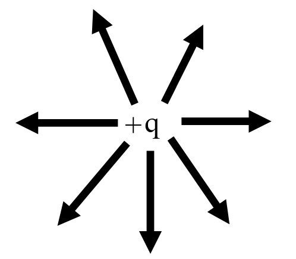

14 Electromagnetic Compatibility
14.1 Electromagnetic Compatibility (EMC)
This section gives the Flight Test Engineer a basic introduction to terms and concepts used by EMC engineers and insight into good testing philosophy and appropriate practices thus improving the interaction between the EMC and Flight Test engineers.
14.2 Abbreviations
| \(A\) | Area | \(\text{m}^2\) |
| \(c\) | Speed of Light | \(3.0\times 10^8 \frac{\text{m}}{\text{s}}\) |
| \(E\) | Electric Field Intensity | Volts/meter, \(\frac{\text{V}}{\text{m}}\) |
| \(f\) | Frequency | Hertz, \(\text{Hz}\) |
| \(H\) | Magnetic Field Intensity | Ampere/meter, \(\frac{\text{A}}{\text{m}}\) |
| \(I\) | Current | Ampere, \(\text{A}\) |
| \(L\) | Inductance | Henries, \(\text{H}\) |
| \(Q\) | Charge | Coulomb, \(\text{C}\) |
| \(V\) | Electric Potential | Volt, \(\text{V}\) |
| \(X_C\) | Capacitive Impedance | Ohms, \(\Omega\) |
| \(X_L\) | Inductive Impedance | Ohms, \(\Omega\) |
| \(\lambda\) | Wavelength | meter, \(\text{m}\) |
14.3 Terms
| AC | Alternating Current |
| DC | Direct Current |
| EMC | Electromagnetic Compatibility |
| EMI | Electromagnetic Interference |
| Far Field | Distance beyond \(10 \lambda\) |
| HIRF | High Intensity Radiated Fields |
| RF | Radio Frequency |
Decibel Logarithmic (base 10) expression for amplitude ratios.
\[\begin{align} \text{dB(power)} &= 10 \log_10 \left( \frac{P_1}{P_2} \right) \\ \text{dB(voltage)} &= 20 \log_10 \left( \frac{V_1}{V_2} \right) \\ \text{dB(current)} &= 20 \log_10 \left( \frac{I_1}{I_2} \right) \\ \end{align}\]
Commonly used decibels for EMC:
| \(\text{dBm}\) | decibels relative to \(1 \text{ milliwatt}\) |
| \(\text{dBW}\) | decibels relative to \(1 \text{ watt}\) |
| \(\text{dB}\mu\text{V}\) | decibels relative to \(1 \text{ microvolt}\) |
| \(\text{dBi}\) | antenna gain relative to an isotropic antenna |
| dB | Power Ratio |
V or I Ratio |
| 0 | 1 | 1 |
| 3 | 2.0 | 1.4 |
| 6 | 4 | 2 |
| 10 | 10 | 3.2 |
| 20 | 100 | 10 |
| 30 | 1000 | 32 |
Common Decibel Values
The sensitivity of a radio receiver can be on the order of \(1 \frac{\mu \text{V}}{\text{m}}\) , while RF field strengths for HIRF can be \(1\,000 \frac{\text{V}}{\text{m}}\) , a factor of a billion or \(180 \frac{\text{dB}\mu\text{V}}{\text{m}}\) .
14.4 Fundamentals
14.4.1 Electric and Magnetic Fields
A static charge \(Q\) , creates a static electric field, \(E\) .

A common magnet produces a static magnetic field, \(H\) .

Transferring charge \(Q\) , i.e. DC current on a wire creates both a constant magnitude electric and magnetic field.

An amplitude varying charge, i.e. changing current (AC), will generate a time varying electric and magnetic Field in different planes.

Plane waves that are self sustaining electric and magnetic Fields and combine in the far field, are commonly called an electromagnetic wave.

14.4.2 Antennas
Antennas can transmit and/or Receive RF equally well. Electrical length determines effectiveness.
\(\frac{\lambda}{2}\) is an efficient antenna element length
where:
\[\begin{equation*} \lambda = \frac{c}{f} \end{equation*}\]
| Frequency, \(f\) | Wavelength, \(\lambda\) |
| 3 MHz | 100m |
| 30 MHz | 10 m |
| 150 MHz | 2 m |
| 300 MHz | 1 m |
| 3 GHz | 0.10 m |
Common Wavelengths
Slots that have favorable electrical lengths are effective antenna elements also, i.e. hatches, doors, avionics metal enclosure seams and ventilation holes.
Loop Area is the area encapsulated between the signal line and its return path that can be an effective antenna. The larger the loop (capture) area, the better the antenna effectiveness is.
14.4.2.1 Spectra
Spectra are the frequency content of the electronic signals and are an important consideration in understanding EMI issues. Periodic signals contain energy at various frequencies and as such, a frequency domain approach is needed. How much energy at what frequency depends largely on the type of periodic signal, (i.e. square wave or sine wave), initial frequency and rise/fall times of the signal. The faster the rise/fall times are, the more spectral content will be developed in the signal, most of which will be unintentional and unwanted. This is mathematically demonstrated by the use of a trigonometric Fourier series.
14.4.2.2 Non-Ideal behavior of components
Non-ideal behavior of components can exists in discrete components such as resistors, capacitors, inductors and even wire when operated at off nominal conditions, for example temperature. Another condition is frequency. For example, a short grounding wire from a DC perspective is a dead short, neglecting the extremely small inductance. But at some frequency, this inductance gets large enough to be a factor, for example on a bonding strap for lightning protection. A \(26 \text{ gauge}\) wire, \(1 \text{ inch}\) above a ground plane will have \(0.028 \mu\text{H}\) per inch of inductance, \(L\) .
where:
\(X_L = 2\pi f L\)
For \(f = 150 \text{ MHz}\) , \(X_L = 26.4 \frac{\Omega}{\text{inch}}\) of wire which can be significant. To reduce this, replace the ground wire with a wide strap.
14.5 Electromagnetic Interference (EMI)
Electromagnetic Compatibility (EMC) is defined as systems that:
- don’t interfere with other systems;
- are tolerant of interference from other systems;
- don’t interfere with itself.
Broadband Interference is interfering signals over a large range of frequencies. These can be associated with spark producing equipment like motors that can create signals with lots of spectral content.
Narrowband Interference is interfering signals that have a limited range of frequencies, usually a single frequency along with it’s harmonics. These can be associated with digital devices that have periodic characteristics like clocks.
14.5.1 Interference Model
The classic interference model is:
Source -> Path -> Victim
To reduce the interference you can:
- Reduce the emissions from the Source
- Disrupt the Path
- Harden the Victim
Sources of interference can be clocks, switching power supplies, CPUs, data buses, network systems, relays, local oscillators, and transmitter harmonics.
Coupling Paths can be signal and power lines, radiating wires, apertures or slots on LRUs, windows, door and hatch openings or antennas themselves.
Front Door Coupling is meant to be interference coming in the normal path to the system, i.e. through the antenna ports to the radio, and can cause interference at extremely low power levels \(‑100 \text{ dBm}\) .
Back Door Coupling is interference coming into the system with the wires leading to the system and is of relatively higher power.
Capacitive Coupling primarily involves electric waves in the near field and is due to voltages on wires.
Inductive Coupling primarily involves magnetic waves in the near field and is due to current on either wires or chassis.
The aircraft fuselage is sometimes incorrectly thought of as a Faraday Cage encapsulating the RF energy inside or preventing it from entering because of its aluminum structure, but actually it is not. All of the windows, doors and hatches allow RF energy to travel through quite easily.
Victims of interference can be radio receivers, VHF, HF, VOR, ILS, ADF, Display systems, Audio and Passenger Address system, smoke and fire detection circuits, fuel quantity systems. Typically, low energy systems can be susceptible.
The reduction or elimination of EMI can be done in three areas; the systems end; by modifying the emissions and/or susceptibility requirements; or at the aircraft end by modifying the aircraft’s wiring or structure.
14.5.2 Conducted Emissions
Current/signal on wires that are not the intended or primary signal is considered conducted emissions. This ‘extra’ current will be passed along to other systems and/or can radiate on those wires acting like antennas.
Differential Mode current is made up of the intended signal or information and/or noise that goes out on the signal wires and comes back on the return lines.
Common Mode current is usually just noise that goes out on two or more signal/return lines and returns via some other path. This is usually the most troublesome in terms of emissions and should be eliminated whenever possible.
14.5.3 Radiated Emissions
RF energy emanating from the unit/LRU itself through holes, slots and apertures or from the interconnecting wires is considered radiated emissions.
14.5.4 Aviation Frequency Spectrum
The table below lists the frequency spectrum of interest to the aviation community. The range is from \(100 \text{ kHz}\) to \(10 \text{ GHz}\) , a factor of \(10^8\) , \(\left(90 \text{ dB}\right)\) . The primary interest is with equipment that is sensitive to RF energy, i.e. radio receivers, which are primarily intended to detect small signals \(\left(-105 \text{ dBm}\right)\) . Emission requirements are set at a low level that will still allow proper operation of the radio receivers. For EMI purposes, emissions from equipment should stay clear of these frequencies.
Aviation Frequencies of Interest
| Band | Frequency |
|---|---|
| ADF | \(190-1750 \text{ kHz}\) |
| HF | \(2-30 \text{ MHz}\) |
| Marker Beacon | \(75 \text{ MHz}\) |
| VHF Nav | \(108-118 \text{ MHz}\) |
| VHF Comm | \(118-138 \text{ MHz}\) |
| Glideslope | \(328-335 \text{ MHz}\) |
| DME, ATC, TCAS | \(960-1220 \text{ MHz}\) |
| GPS | \(1227, 1558, 1575 \text{ MHz}\) |
| Glonass | \(1609 \text{ MHz}\) |
| Radio Altitude | \(4.2-4.4 \text{ GHz}\) |
| MLS | \(5.0-5.25 \text{ GHz}\) |
| WXR | \(5.4, 8.8, 9.0-9.3 \text{ GHz}\) |
14.6 Testing
14.6.1 Regulations and Industry Guidance
The following references are regulations and industry guidelines that address procedures and acceptable limits for interference testing.
- RTCA DO160D, Chapter 21
- FARs Part 25.1353 and 25.1431
- MIL STD 461
- CISPR
- FCC Part 15
- Aircraft manufacturers own standards
14.6.2 Lab Testing
Lab testing of the unit using established standards and practices is the first and best means of testing. Not only is this where you will find the trouble spots (i.e. frequencies) but also is a place where some troubleshooting could alleviate potential problem areas. Contracts with LRU vendors should be written to require the equipment pass these tests, identified above, before delivery. A list of frequencies that exceed an established limit is the result.
14.6.3 Aircraft Ground Testing
After lab testing, the unit should be installed in the airplane and be tested with the installed shops wiring. Testing will consist of measuring conducted emissions with current probes on wire bundles associated with the new equipment.
Radiated emissions are tested by using the aircraft’s antennas hooked to test equipment to determine how much RF energy is getting into these sensitive systems. Again, a list of frequencies that exceed an established limit is the result.
14.6.4 Aircraft Flight Testing
Only after both lab and ground testing is accomplished can a meaningful flight test occur. The results of the ground test should produce a list of frequencies of some exceedance or observed interference. It is usually only these frequencies that need to be cleared in flight. The appropriate systems should be tuned to those frequencies and with the equipment to be tested in its’ operating mode, determine if there is objectionable interference, (usually a pilots subjective opinion). Pilots can evaluate systems only if adequate lab/ground testing has been done beforehand. EMI issues that are found in flight test are very difficult and expensive to fix at this stage, and can typically only reduce or mask the problem.
14.6.5 Avionics changes and EMI testing
Changes in the hardware/wiring of a piece of avionics that could affect EMI testing are:
- Processor speeds
- Power Supply changes
- Frequency sensitive components, capacitors and inductors
- Circuit card layout and repackaging changes
Software changes typically don’t affect EMI unless software controls/switches hardware related functions, i.e. speeds, options, peripherals etc.
14.7 Lightning
Lightning is a very large electrical transient that can impart thousands of Amperes of current through an aircraft structure. The structure needs to present a low impedance path for the lightning current so that no damage causing arcing and/or over-heating occurs. Additionally nearby wiring needs to be shielded to protect against the induced current produced by the ever changing magnetic fields.
14.7.1 Aircraft Lightning Zones
The aircraft is divided into different areas that relate to the probability of a lightning attachment. The nose, tail, wingtips and engine nacelles (extremities) are more likely areas.
14.7.2 Direct Effects
Direct effects of a lightning attachment can be in the form of heating, arcing and acoustic issues. Designing the structure to handle the current flow and providing a low impedance path for the lightning current will greatly minimize these effects.
14.7.3 Indirect Effects
Indirect effects considers the current that is induced by the transient and coupled onto aircraft wiring that is parallel to the main lightning current flow. The protection is two fold. Systems are designed and tested to handle these types of transients as well as the wiring is addressed to minimize the induced transient to these systems. Shielding and good grounding with short pigtails at both ends is a good method to reduce the induced current.
14.7.4 Instrumentation Precaution
Any flight test instrumentation wiring that lies outside the protective fuselage needs to be evaluated for both direct and indirect effects of a nearby lightning attachment. The sensor itself must be protected from the direct attachment and the wiring must be protected from induced current onto that wiring. This current may damage the data system equipment and/or, other aircraft systems that are also instrumented. Good shielding and grounding techniques will minimize these effects. For more information see the 14.6 Reference at the end of this handbook section.
14.8 High Intensity Radiated Fields (HIRF)
Aircraft can be exposed to large RF energy produced by high powered radio transmitters or military/airport surveillance radars. These RF fields can penetrate the aircraft fuselage through windows and doors/slots which could couple with aircraft wiring and/or systems and potentially interfere. This threat is addressed by both the aircraft and systems approach.
The systems themselves are designed and tested to be immune to a particular level of RF. These levels are determined by the criticality of the systems and are specified in regulatory material. Testing is usually done in a laboratory environment.
From the aircraft side, the internal wiring for critical systems is protected with appropriate shielding and grounding. Aircraft ground testing is done at special facilities that can radiate the vehicle with large RF fields with instrumentation inside to measure the penetration and to verify correct system operation.
14.9 Precipitation Static (P-static)
This occurs due to a buildup of static charges that discharge by noisy arcing from/to various parts of the aircraft. The static buildup is caused by tribo-electric charging from the aircraft impacting snow/rain/ash particles in the air while flying. This charge should gracefully exit the aircraft through static wicks installed on the wingtips and empennage tips. If it doesn’t the problem shows up as broad banded noise (white noise) heard on receivers such as ADF, HF and to some extent VHF as the aircraft flies through the precipitation.
Typical causes are access panels (composite and metal), cowling and fairings that are not properly grounded. Ground straps do a good job of not isolating parts. (Note: these straps should not be used for lightning protection as they usually are not sized to handle the current).
14.10 References
| 14.1 | Paul, C. R., “Introduction to Electromagnetic Compatibility”, John Wiley & Sons Publishing, 1992 |
| 14.2 | Ott, H. W, “Noise Reduction Techniques in Electronic Systems”, John Wiley & Sons Publishing, 1988 |
| 14.3 | Hrehov, D. W. and Walen, D. B., “What Flight Test Crews Need to Know About EMI/EMC”, 34th Annual SFTE Symposium Workshop, 2003 |
| 14.4 | Federal Aviation Regulations, Part 25 |
| 14.5 | RTCA DO160D, “Environmental Conditions and Test Procedures for Airborne Equipment”, 1997 |
| 14.6 | Hrehov, D. W., “What Instrumentation Engineers Need to Know About Lightning”, 31st Annual SFTE Symposium, 2000 |
| 14.7 | Fisher, F. A., Perala, F. A., and Plumer, J A., “Lightning Protection for Aircraft”, Lightning Technologies Inc., 1990 |